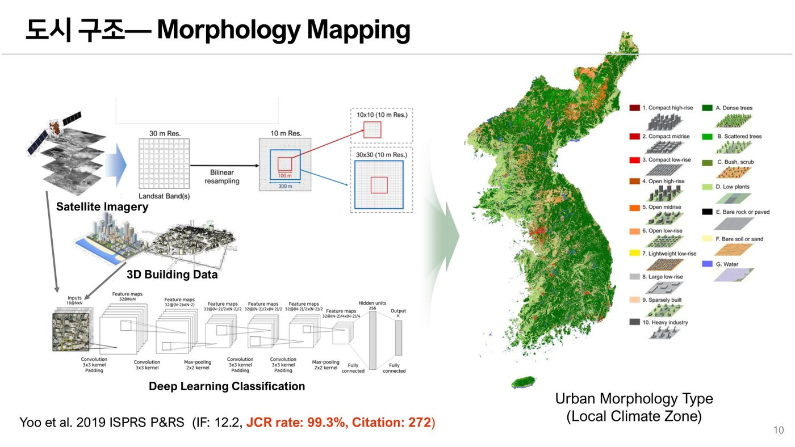

01
Urban Morphology Mapping
We map local climate zones and urban morphology types by combining satellite imagery, 3D building data, and deep-learning classifiers. These products support urban-growth monitoring, planning analysis, energy-use modeling, and urban-climate studies.
- Local Climate Zone mapping
- High-resolution urban land-cover classification
- 2D/3D urban-growth analysis